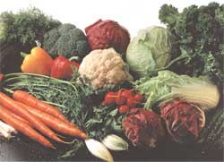
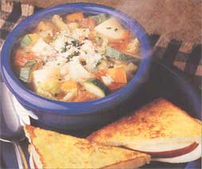

MOTHER'S KITCHEN
Help! Now that you've grown this plethora of produce what do you do with it all!
"As long as the earth remaineth, seed time and Harvest ... will not cease." - Genesis 8:22
At last, the moment of truth ... harvest time has arrived. Those little seeds that you so carefully planted in May have actually reached maturity and produced real vegetables. And you did it with your own two hands. You feel like a new parent - ecstatic and proud - until the panic sets in, and you wonder what on earth you can do with all your homegrown produce. You always thought that your gardening neighbors were so kind and generous to annually bestow bushels of tomatoes and assorted produce on you. You're on to them now. They're cleverly eliminating their own panic by dumping all their produce on you.
Personally, I don't do gardens. I'm in charge of the flowers and I leave the organic vegetable gardening to my husband. I wouldn't want to deprive him of rushing out to the garden after work to water and care for his little babies. It's his idea of therapy. Every so often, he'll call my son and me outside to admire the progress of say, his varieties of prize peppers. We "ooh" and "ahh" obediently as we gaze at the tiny peppers. Sometimes we don't see anything at all because of my husband's unique gardening style - also known as "organized disorder" or "welcome to the jungle." But this doesn't seem to affect the quality of the vegetables. They look and taste as though Farmer John just brought them in from the "back 40."
But around the beginning of August, the jungle becomes "bee haven," where hundreds of bees vacation until Halloween. My son and I then refuse to pick anything out there because we've been stung too many times. This was definitely becoming a major produce problem for a while, so my son designed his famous "bee armor," which he wears faithfully to this day. The armor consists of a hooded sweat shirt and sweatpants, ski goggles and, ski gloves - not such a weird outfit during March in the Midwest, but a bit strange for a 102° day in August.
It's wonderful to have fresh produce just a ski-gloved hand away. (That is, until around the third week of August, when your veggies are multiplying faster than rabbits.) At 10 p.m., my husband will enter the kitchen with 28 perfectly ripened tomatoes, 13 zucchini, and 7 cucumbers, all in his personal horn of plenty. To this I say, "You take those vegetables back to the garden and put them back on their vines this minute!"
Before produce-panic sets in at your house, get a plan, get a freezer, throw a huge veggie barbecue, and don't be a bit afraid to unload your produce on your neighbors. (Smile, and remember that "plastic" grocery-store tomatoes are only 60 days away.)
Mark two days out of every week on your calendar during harvest time, when you can devote a couple of hours to cooking and freezing your produce. Prepare large amounts of vegetable dishes such as "Caponata" (see recipe below) so there'll be leftovers for lunches and picnics. Plan your menus around the abundant vegetables. Make double batches of zucchini bread, casserole, tomato sauce, and soup for the freezer.
Instead of driving yourself crazy freezing everything in sight, freeze only those vegetables that are difficult to find, that are expensive, or are of poor quality during the winter months. Listed below are the vegetables that I have found freeze well. (Vegetables that do not freeze well, such as cauliflower, can be put into soups before freezing.) Have plenty of different-size zip-lock freezer bags on hand and a permanent marker for labeling and writing the date (including the year) on each package. Wash and thoroughly dry all the vegetables before freezing.
TOMATOES
Cut out both the top (where the stem was) and any bruises. Freeze whole, placing them in large freezer bags. Plum tomatoes are best for freezing but I've even frozen cherry tomatoes to use in chili later on. When using frozen tomatoes, defrost them for about ten to 15 minutes and the skin will peel off easily. Then chop and add to your recipe. You can also drop them into hot soup or whatever you're making for ten minutes. They will cook very quickly. Fish them out of the soup, skin, and chop.
SWEET PEPPERS (GREEN, YELLOW, RED)
Cut into quarters and core. Put into bags and label. Red peppers are expensive during the winter so I freeze more of them. When using frozen peppers, defrost them slightly, then slice or chop.
BROCCOLI
Cut into one-inch pieces. Steam in a covered casserole in the microwave (or in a vegetable steamer on the stove). Cook for about 1 1/2 to 2 1/2 minutes until the broccoli is partially cooked but still firm, stirring at least once so it steams evenly. Using a colander for the broccoli, plunge it into ice-cold water in the sink for a few seconds to stop the broccoli from cooking, then pat dry on a dish towel. Let cool completely before putting into bags. When using frozen broccoli, put it into the recipe at the last minute so it doesn't overcook.
CORN
Steam the corn on the cob in a covered pan with two inches of water. Place the corn in a vegetable steamer and steam until just done but still firm. If the corn is overcooked, it gets too mushy and much of the nutritional value is eliminated. You can also microwave corn with the husks three at a time, turning the ears every 60 seconds for about three minutes. Cut the corn off the cob immediately before it shrivels. Keep steaming corn, cutting it off the cob and putting it in a large bowl. Refrigerate until cold. Then put into freezer bags 3/4 full and press flat. Label and freeze with the corn laying flat. You can put the bags in any position in the freezer once they're frozen.
Caponata can be eaten hot or cold. Make a big batch so you'll have leftovers for lunches and picnics. It can be topped with chopped parsley, fresh basil, freshly grated Parmesan cheese, or toasted pinenuts. Caponata will keep for about a week when stored in a plastic container and placed in the refrigerator.
2 tablespoons olive oil
1 small cayenne pepper (minced) or 1/2 teaspoon powdered cayenne
3 large cloves garlic, minced
1 large onion, diced
1 medium eggplant or five to six medium Japanese eggplants
2 green or yellow zucchini
2 red peppers (green or yellow can be substituted)
2 stalks of celery, finely chopped
(Caponata continued)
*8 skinned plum tomatoes or four to six regular tomatoes
2 tablespoons tomato paste
1/2 cup chopped and pitted black Calamata (Greek) olive or canned, black olives
dash salt, ground pepper
2 teaspoons thyme
1/2 teaspoon oregano
2 tablespoons red-wine vinegar
1 teaspoon sugar
Dice the eggplant and zucchini into 1/2 inch cubes. Using a large skillet, sauté the eggplant in the olive oil, garlic, onion, and cayenne pepper. Add the rest of the ingredients except for the red peppers. Cover and cook on medium heat for 20 to 25 minutes, stirring every few minutes until vegetables are tender. Add the red peppers during the last ten minutes. If there's too much liquid in the pan, simmer for the last 10 minutes with the lid partially removed.
*If you make this in the winter months using canned tomatoes, add 1/4 cup of the juice or puree from the can.
These vegetables can be baked the night before when the temperature is cooler outside and then microwaved or heated in a saucepan on top of the stove. Grilled lamb kebobs or Greek-style grilled chicken compliment these vegetables nicely.
2 large potatoes (peeled if skin is tough), cut into 1 inch cubes
5 medium tomatoes, peeled and diced
1 medium eggplant, diced into 1 /2 " cubes
3 medium zucchini, cut lengthwise into quarters,
- then cut into 1/2 "slices
*1/2 lb green beans, cut french style
- into string beans or cut into 1" pieces
2 tablespoons olive oil
2 large cloves of garlic, minced
2 medium onions, cut into quarters, thinly sliced
3 tablespoons tomato paste
1/4 cup chicken broth
1 tablespoon dill
2 teaspoons oregano
1/2 teaspoon salt, ground pepper
1/2 teaspoon cayenne pepper
Pre-heat oven to 350° F. In a large, shallow casserole dish with a lid, place the potatoes and the chicken broth. Microwave until the potatoes are almost done but still firm (or simmer in a covered saucepan on the stove). Stir in all the ingredients except for the green beans. Bake for 20 minutes with the casserole covered. Remove from oven and stir in the green beans. Bake another 20 minutes with the lid removed until the vegetables are tender but not mushy. Top with minced parsley.
*In the winter when green beans are unavailable, use frozen french-style green beans and add during the last 10 minutes of baking.
Babaghanoush is a great way to use up eggplants. The secret to the flavor of this Mid-Eastern dip is broiling the eggplants so they have a smoky flavor. Use the dip to spread on toasted Pita bread, crackers, or garden vegetables. It will keep refrigerated for about a week.
2 medium eggplants-cut off ends and cut in half lengthwise
*1/4 cup tahini (sesame paste)
1/4 cup lemon juice
1 large clove of garlic, crushed
1/2 onion, cut into quarters
salt and pepper to taste
dash of cayenne pepper
1 tablespoon olive oil
1/2 cup coarsely chopped parsley
Place the eggplants (cut-side down) on a foiled pan or cookie sheet, sticking a fork in the top of each piece to make air vents. Broil until the eggplant is charred on the outside and tender on the inside (about 15 minutes). Turn the pan at least once so the eggplant cooks evenly.
When the cooked eggplant is cool enough to handle, scrape it away from the skin and then discard the skin. Place the eggplant and the remaining ingredients into a food processor or blender and blend until smooth. Chill before serving. Sprinkle minced parsley on top if desired.
*Tahini can be purchased at most grocery and health food stores.
1 tablespoon olive oil
2 large cloves of garlic, minced
1 small cayenne pepper, minced or 1/2 teaspoon powdered cayenne
1 large onion, chopped
3/4 cup dried or canned navy beans
- (or any small beans such as red beans, adzuki beans)
1 can chicken broth
3 cups water, add more later as needed
5 to 6 peeled medium tomatoes
salt and ground pepper to taste
2 teaspoons basil
1 teaspoon thyme any other herbs available
Vegetables ( basically use whatever you have on hand ):
1/2 cauliflower, cut into 1 "pieces
1 red pepper, cut in thin slices, then cut in half
2 to 3 zucchini or yellow squash, cut in half length-wise,
- then in 1/4" slices
2 kohlrabi or turnips
2 to 3 ears of corn
2 to 3 carrots
1/2 lb green beans or wax beans, cut into 1 "pieces
Sauté onion, garlic, and cayenne in olive oil. Add beans, broth, water, spices, and herbs. Cover and simmer for one hour. Add noodles or pasta of your choice and simmer 10 minutes. Serve with cheese.
|
 |
 |
|